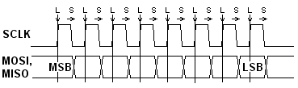
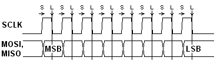
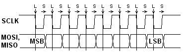
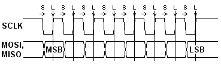

2006. 3. 13
SPI(Serial Peripheral Interface)とは、オンボードIC間通信の方式の一つで、モトローラ（現在は半導体部門がフリースケール・セミコンダクタとして分離）が提唱したものです。単純で汎用性が高いので、フィリップスのIICバスと並んで広く使われています。SPIの配線数は、全て2線で済むIICに比べると多め（3〜4本）になりますが、伝送速度はIICの数十倍（20Mbps以上、ICの能力による）が可能なので、比較的速度を要する用途（ADC、DACや通信ICとの接続）で主に採用されています。
SPIの基本構成は右の図に示すようになっています。マスタICとスレーブICとの間は3本の信号線、SCLK(Serial Clock)、MISO(Master-In Slave-Out)、MOSI(Master-Out Slave-In) で接続され、マスタICの駆動するクロックで双方の8bitシフトレジスタのデータを交換します。このほか、伝送開始の同期をとるためおよびバス接続のためにSS(Slave Select)が設けられます。スレーブ動作専用ICではこれらの信号名とは別の信号名（DI,DO,CSなど）が使われることが多いです。DACや1ch ADCのように一方通行で済む場合は、片方のデータ信号が省略されます。データのシフト方向はMSBが先頭になります。
複数のスレーブをバス接続する場合は、スレーブがSPIに並列にぶら下がり、マスタから個々のスレーブにCS信号が接続されます。スレーブのデータ出力は3ステートになっていて、CS信号で選択されたスレーブだけがMISO信号を駆動することになります。
| SPIモード | タイミングチャート |
|---|---|
| モード 0 正パルス ラッチ先行 |  |
| モード 1 正パルス シフト先行 |  |
| モード 2 負パルス ラッチ先行 |  |
| モード 3 負パルス シフト先行 |  |
SPIではデータのシフトと取り込みがそれぞれ別のクロックエッジで行われます。このようにシフト動作とラッチ動作を離すことにより、それらを同時に行うことによるクリチカルなタイミングが発生しないので、IC内外でのタイミング設計が楽になります。その反面、クロックパルスの極性（正パルスか負パルスか）や位相（シフトが先か取り込みが先か）のバリエーションにより4つの動作モードが定義されていて、マスタはスレーブの仕様に合わせて動作する必要があります。